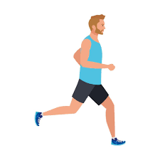
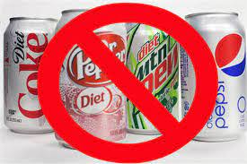
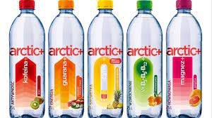
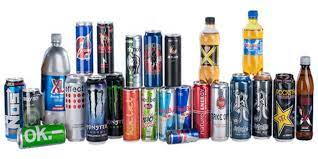
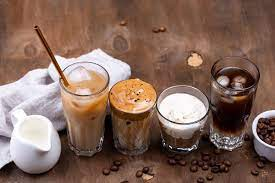
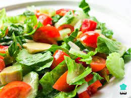

Aprende a bajar de peso realmente y descubre
las mentiras que suelen decir

Todas las personas tienen un mal concepto sobre el tema de adelgazar, ya sea
dejando de comer,
haciendo solamente cardio, tomando bebida saludables en
ayunas o comer ensalada unicamente, la cual todo esto esta mal y te dire la verdad
¿Debo dejar de comer?
La respuesta mas directa es NO, de hecho el no comer te causa problemas saludables, tanto fisico y psicologico ya que al no consumir los nutrientes y calorias que el cuerpo te pide a diario, no es sano y causarias un problema psicofisico.
Los ejercicios
Los ejercicios son otro de los tantos temas que se tienen en cuenta en el proceso de adelgazar, pero lo que siempre nombran es el Cardio, el hacer cardio es bueno, claro que si, pero no es la mejor o unica forma de adelgazar,¿Entonces cual es?.
Para entender mejor el cardio, es el que permite entrenar nuestro corazón para prevenir enfermedades como la diabetes, la hipertensión arterial y otras enfermedades cardiovasculares como un infarto, es decir los ejercicios de entrenamiento cardio, son los que aumentan nuestro ritmo cardíaco y mejoran nuestra condición física en la resitencia. La mejor forma de aldegazar siempre sera haciendo ejercicios de fuerza, es decir con peso, necesariamente no necesitas pesas, recuerda que puedes hacer ejercicios de fuerza con tu propio cuerpo.
Bebidas saludables que realmente no lo son
Muchos sabemos que siempre hay anuncios que dicen que si tomas agua con limon en ayunas esto te servira para adelgazar o que tomando ciertas bebidas en ayunas vas a poder adelgazar y esto no es de todo cierto. Si, hay bebidas que te ayudan para adelgazar, pero no son como estas personas con publicidad engañosas dicen. Te mencionare bebidas malas y dañinas que toman creyendo que son buenas.
Bebida dietetica

Estas bebidas dicen tener cero calorias o cero, pero tampoco tienen nutrientes. Puedes tomar una al dia pero hasta ahi, ya no mas, recuerda que todo en exceso es malo.
Agua con sabor o saborizada

Es lo mismo que tomar una bebidad con azucar, no importa si dice que tiene vitaminas, es igual, todas las bebidas lo dicen, hay algunas que dicen que no tienen azucar pero eso es peor, tienen la bebidad aromantizada de alguna forma.
Bebidas energeticas

Creo que no hace falta explicar esto muy ha fondo, pero las bebidas energeticas tiene ha tener pocas calorias y de paso las bebidas energetica tienen ha elevar la hormona del estres y la presion arterial de las personas saludables.
Bebidas de cafe mezcladas

Esta es las mejor de la peor bebida que puedes tomar, una gran taza de cafe puede tener 1/3 de la ingesta maxima recomendada de grasas saturadas y hasta 800 calorias con alrededor de 170 gramos de azucar, eso es un gople de azucar mayor que el de un zumbido de cafeina.
Comer solo ensaladas

Muchas personas tienden ha creer que para adelgazar solo hay que comer ensaladas o frutas todo el dia y esto es completamente mentira, es bueno comer ensalda, si, pero siempre debe de ir acompañada de algun nutriente, carbohidrato y una bebida tambien saludable.